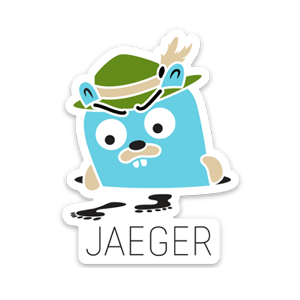

Quarkus
Supersonic Subatomic Java
Peter Palaga
Peter Palaga
Agenda
- A 5 ms demo
- What is Quarkus
- How does it work
- Interesting features
- Known issues and limitations
Demo
What is Quarkus
Quarkus
Quark - an elementary particle
us - the hardest problem in software
Framework
andtoolkit
for writing Java applicationsContainer First
| 💾 | Small size on disk | ✓ | Small container images |
| 🚀 | Fast boot time | ✓ | Instant scale up |
| 🔬 | Low RSS1 memory
1) Resident Set Size |
✓ | More containers with the same RAM |
Memory (RSS)
| Quarkus + GraalVM | Quarkus + OpenJDK | Traditional Cloud-Native Stack | |
| REST | 13 MB | 74 MB | 140 MB |
| REST+JPA | 35 MB | 130 MB | 218 MB |
Measuring memory
RSS = all RAM consumed by the process$ ps -o pid,rss,command -p $(pgrep .*runner)
PID RSS COMMAND
11229 12628 ./target/getting-started-1.0-SNAPSHOT-runnerStartup time
Do not get fooled by lazy initilization
Time to first request matters
Time to first request1/2
@Path("/")
public class GreetingEndpoint {
@GET @Path("/greeting")
public String greeting(@QueryParam("name") String name) {
System.out.println(System.currentTimeMillis());
return "Hello " + name;
}
void onStart(@Observes StartupEvent startup) {
System.out.println(System.currentTimeMillis());
}
}Time to first request2/2
Boot time
| Unifies | ||||
Imperative |
and | Reactive |
||
|
|
|||
Existing standards
|
|
|
|
|
|
Libs and frameworks
you love and use today
 Eclipse Vert.x
Eclipse Vert.x
|
 Hibernate
Hibernate
|
Resteasy | Apache Camel |
 Netty
Netty
|
 Kubernetes
Kubernetes
|
 Jaeger | Prometheus |
 Apache Kafka
Apache Kafka
|
Infinispan |
Developer joy
Development centric experience, without compromise, to bring your amazing apps to life in no timeHow does it work?
Quarkus features
Quarkus wrap up
Quarkus project info
- Apache License v2
- https://quarkus.io/
- Quickstarts: https://quarkus.io/
- Stack Overflow tag: quarkus
- Chat: https://quarkusio.zulipchat.com/
- Dev mailing list: https://groups.google.com/d/forum/quarkus-dev